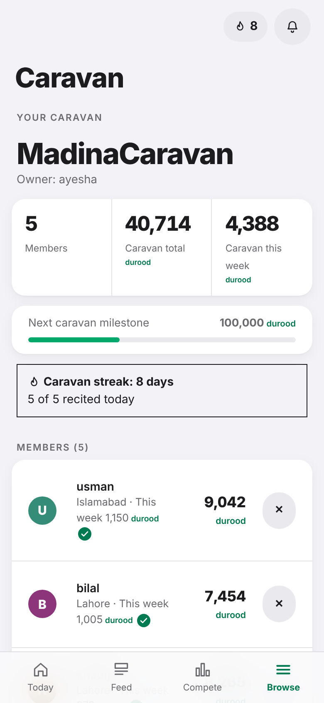
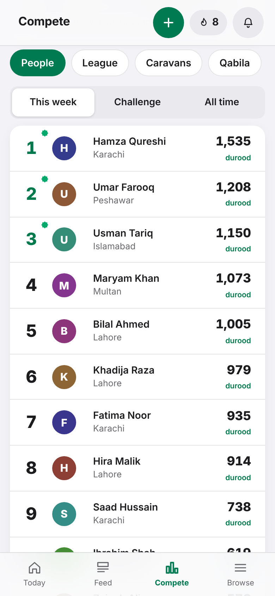
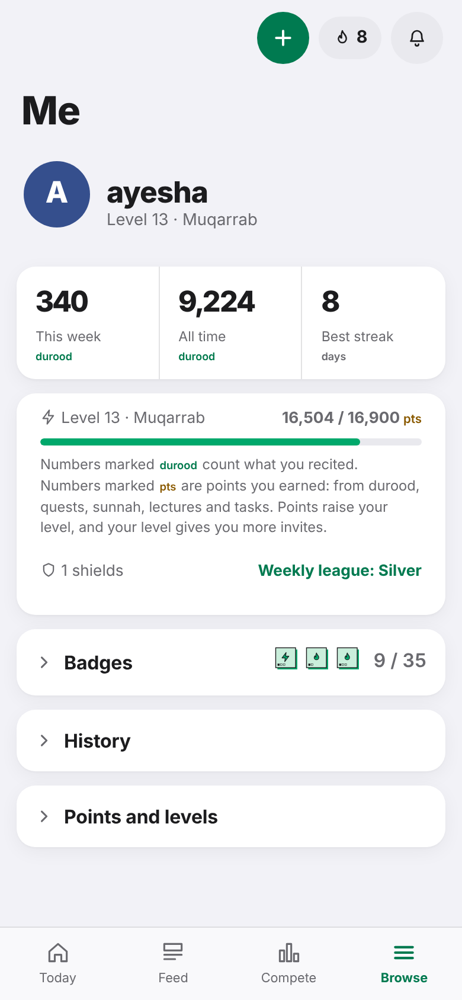

Seerah Questسیرت کوئسٹ
Durood Shareef
اللّٰهُمَّ صَلِّ عَلٰى مُحَمَّدٍ
وَعَلٰى اٰلِ مُحَمَّدٍ
وَعَلٰى اٰلِ مُحَمَّدٍ
O Allah, send blessings upon Muhammad ﷺ
and upon the family of Muhammad
and upon the family of Muhammad
1→10
“Whoever sends one durood upon me, Allah sends ten blessings upon him.”
جو مجھ پر ایک بار درود بھیجے، اللہ اس پر دس رحمتیں بھیجتا ہے۔
Sahih Muslim 408
Count
Tap for each durood.
ہر درود پر ٹیپ کریں
Together
Recite with your caravan.
اپنے کارواں کے ساتھ درود پڑھیں
Compete
Race in goodness, every week.
ہر ہفتے نیکی میں آگے بڑھیں
Grow
Streaks, levels, badges.
سلسلہ، درجے اور بیجز



+1
Seerah Quest
سیرت کوئسٹ
10 croredurood together
40 daysone challenge
Ask a member for an invite→
کسی رکن سے دعوت لیں اور آج ہی شامل ہوں
Every durood is dedicated to the work of the Seerat Circles across Pakistan.